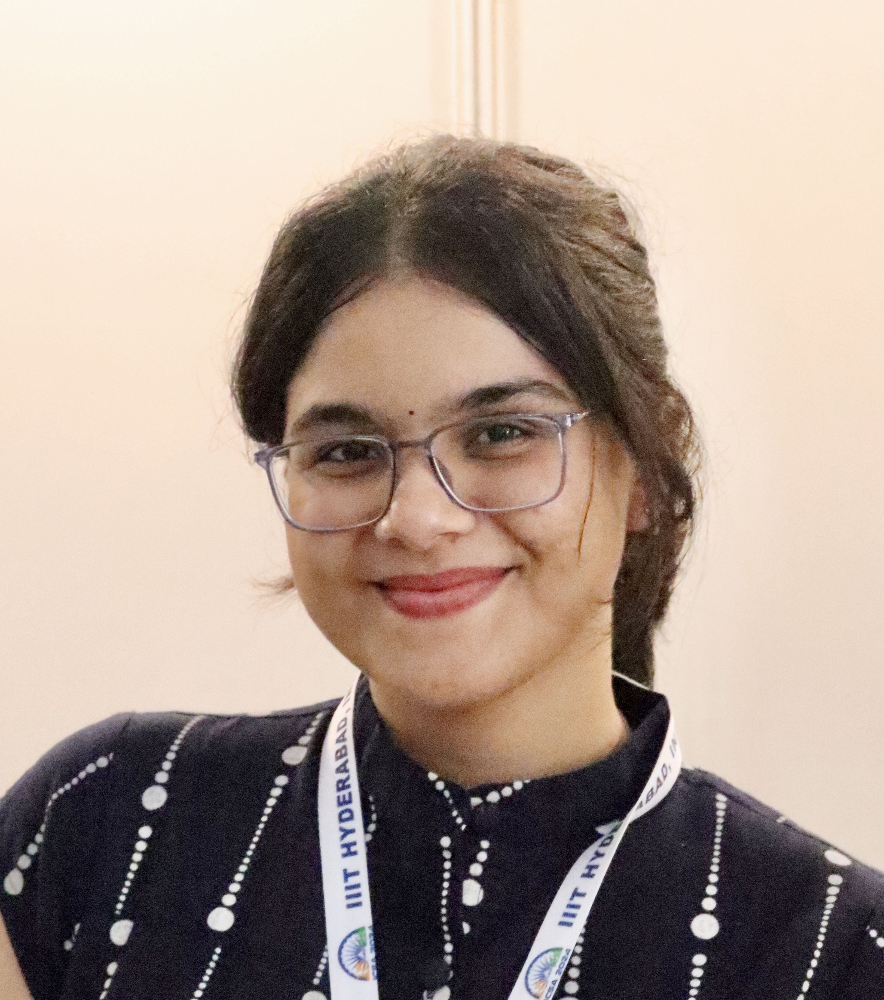

Hiya Bhatt
MS by Research in Computer Science and Engineering, IIIT-Hyderabad
Researcher in Sustainable MLOps, Self-Adaptive Systems, and Software Architecture
hiya.bhatt@iiit.ac.in |
Google Scholar |
GitHub
About Me
I am currently pursuing my MS by Research at IIIT-Hyderabad under the supervision of Dr. Karthik Vaidhyanathan. My research focuses on designing sustainable MLOps systems through self-adaptation and context-awareness. I have worked on projects like HarmonE and DigIT that integrate software architecture, machine learning, and intelligent transportation systems.
Publications
-
HarmonE: A Self-Adaptive Approach to Architecting Sustainable MLOps
Hiya Bhatt, Shaunak Biswas, Srinivasa Rakhunathan, Karthik Vaidhyanathan
Accepted at ECSA 2025 – European Conference on Software Architecture
-
Architecting Digital Twins for Intelligent Transportation Systems
Hiya Bhatt, Sahil, Karthik Vaidhyanathan, Rahul Biju, Deepak Gangadharan, Ramona Trestian, Purav Shah
Presented at ICSA AEDT Workshop 2025, Odense, Denmark
-
Towards Architecting Sustainable MLOps: A Self-Adaptation Approach
Hiya Bhatt, Shrikara Arun, Adyansh Kakran, Karthik Vaidhyanathan
Accepted at ICSA-C 2024, Hyderabad, India
Projects
- HarmonE: An adaptive MLOps framework using a MAPE-K loop and design-time decision mappings to manage energy debt and retraining.
- DigIT (with Middlesex University, UK): A Digital Twin architecture for ITS, combining predictive models with traffic simulations to drive adaptive interventions.
- Low-Code ML Platform: A modular FastAPI + React UI for end-to-end ML pipeline assembly without boilerplate coding.
Awards & Recognition
- Selected as a Research Intern under SRISHTI’23 at IIIT-Hyderabad.
- Paper accepted at International Conference on Software Architecture (ICSA 2024, Core A).
- Paper accepted at European Conference on Software Architecture (ECSA 2025).